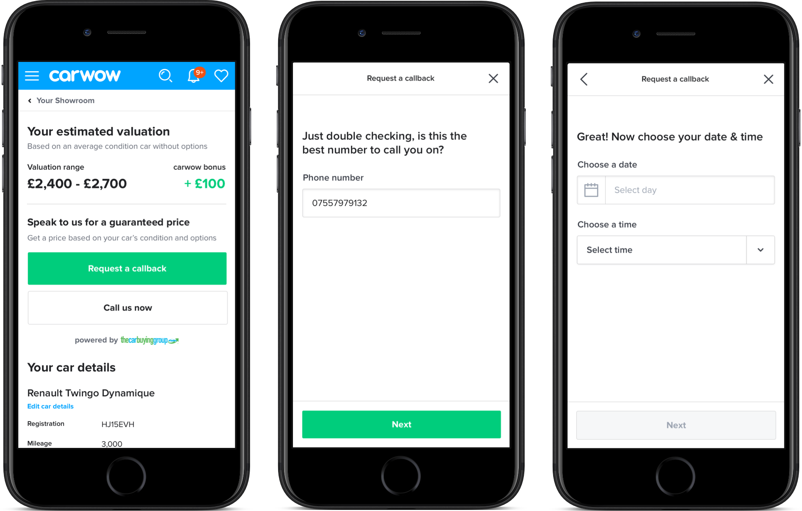
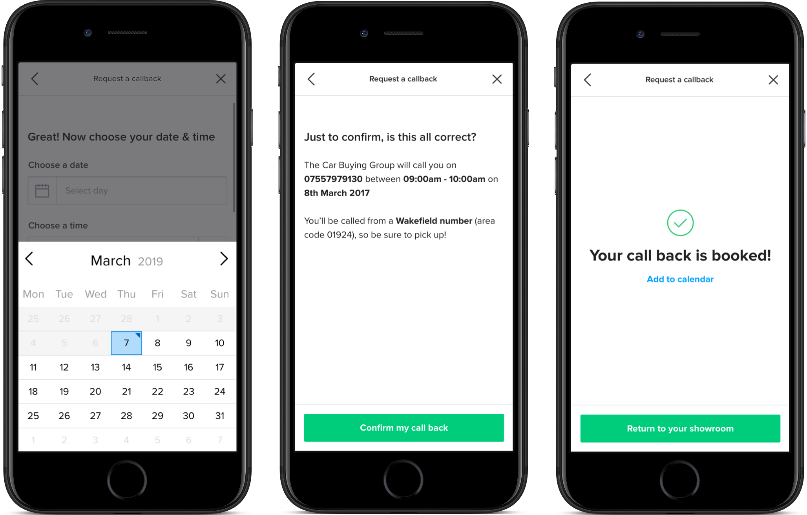
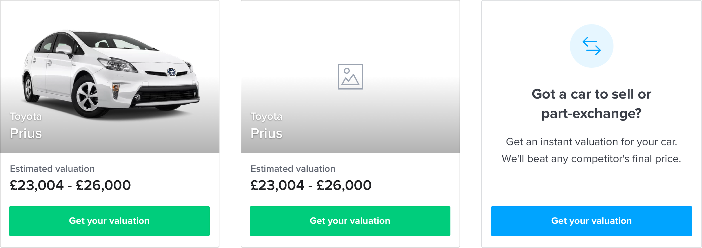
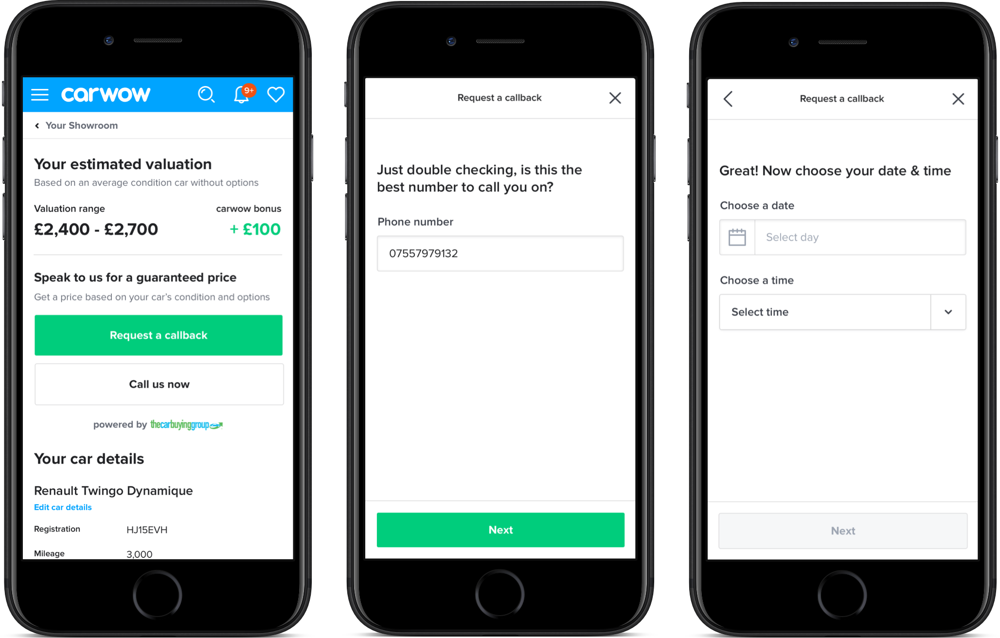
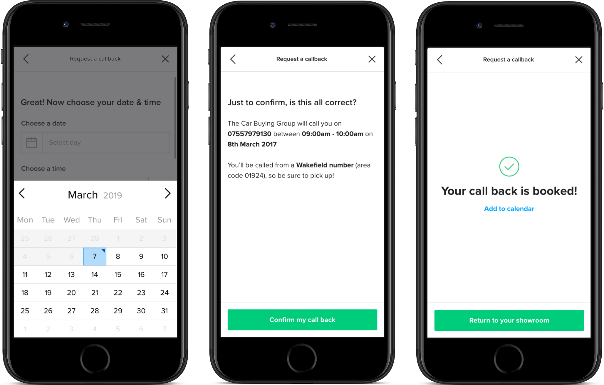
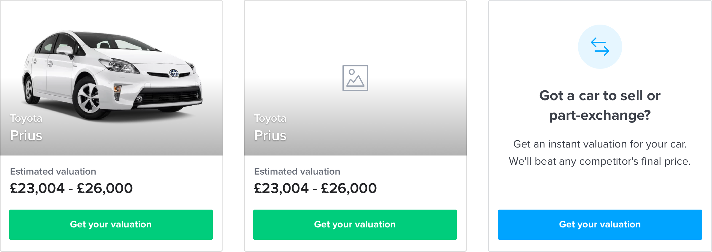

Building a part-exchange proposition
How we built out our proposition to solve one of our users core problems when buying a new car – getting rid of their old car.
The challenge
We know that 80% of new car buyers have a car they need to sell or part-exchange, yet only 5% of carwow users use the current carwow tool.
How can we create a tool that can help carwow users at the right point of their car buying journey?
The outcome
See what we built, before viewing the process as to how we got there:

 





The process
Create an MVP in 7 days
As an MVP, our first goal was to integrate a 3rd party API (The Car Buying Group), changing the current tool that was live on the website, into one using a 3rd party.
The Research
- 217,000 users per year use the current tool.
- “Selling” & “Part-exchange” is the 3rd most popular topic in messaging on the website.
- The 3rd party would be within 1-3% of the cheapest price quoted, based on data analysis.

The Car Buying Group features:
- They will match any online competitor.
- Free collection from a place of your choosing.
- Earn an extra £100 when you sell through carwow.
- Get paid instantly, without any fees.
MVP Release

Post release
After releasing the MVP, we wanted to conduct further research & figure out what was the next best area to focus on developing based on the data coming in, combined with user testing & surveying.
Conversion rate dropped
Upon release, we noticed that the variant we shipped had a much lower conversion rate than the control.
Users are reluctant to enter phone no.
Our main hypothesis was that adding a phone number field attributed to the main drop in conversion. We validated this with on-site surveys.
User testing
We now had more time to run some internal user testing, to identify key themes that we should work on next.

User testing themes
- Users don't expect to get an instant valuation - they think they will be called with it within a couple of hours.
- Not clear enough about the free UK pick up service - this could be a real selling point but users don't really understand the way we are explaining it to them.
- Most users suspected a price with some kind of disclaimer about the condition to follow on the next, which created some confusion in the context of competitors.
- Little context regarding where the £100 bonus is coming from and in what form.
- Users would still want to use other sites like AutoTrader and WhatCar to get other valuations, taking them away from the site, rather than showing a comparison of carwow & other competitors.
How might we statements
Off the back of the heuristic analysis & user testing, we grouped the common themes into how might we statements.
- “How might we make the value proposition clearer, with more personal language?”
- “How might we make the page feel less clinical, and add some personality?”
- “How might we make the page feel less clinical, and add some personality?”
- “How might we better highlight the benefits of using The Car Buying Group to users, prior to them starting the process?”
- “How might we help users understand why we need their phone number & provide more reassurance to provide their personal details?”
Landing page iteration
The business wanted to improve landing page conversion. We took the how might we statements and developed a further iteration of the landing page, before focussing on developing the experience. The goal was to increase conversion from 25% to 40%.
Test results
After making the changes we saw conversion jump up to around 39.6% on our most successful variant. The next steps were to look at how we might open up the funnel, as well as looking at how we might improve the post valuation experience.
Next Steps
Valuation to call pick up % was identified as the next metric to focus on by running a post-it note impact vs effort workshop. This took into account the data insights, user testing, heatmaps & video sessions gathered.
Our goal was to increase our primary metric from 10% to 30% through:
- Qualifying when a user needs to sell their car to qualify intent, to help users & the third party.
- Using the 3rd party API functionalities to provide easier ways for users to interact with The Car Buying Group:
User flow
Working alongside the Product Manager, Commercial Lead & Technical Lead, we mapped out a user flow we’d like to test within a prototype.
This took into consideration all the insights we’d gathered, combined with the areas of focus in terms of metrics from the business.

Low fi mocks
Using Whimsical, I created low-fi mocks of the flow, then gathered feedback from the whole internal team & The Car Buying Group, creating a quick feedback loop without committing to high-fi designs.
The prototype
View the prototypeUser testing findings
The whole team watched user testing, afterwards we ran a workshop asking the following:
- What worked well?
- What didn’t work well?
- What opportunities do we have?
User testing grouping
We took all of these sticky notes, themed them & created How might we statements:
- “How might we help a customer access the part exchange tool how and when they want it?”
- “How might we allow users to know the value of their car but without interrupting their research journey?”
- “How might we make smart recommendations according to the users current car and let them know the depreciation curve?”
Workshop
Using the how might we statements, we used a portion of the workshop to come up with ideas, theme those, and off the back of that, used crazy eights technique to create ideas, with the overall goal being:
“Open up the funnel to more high intent users at the beginning of their journey, without putting the other products at risk”.

Outcomes
Some main themes were apparent throughout the workshop, we decided to focus on getting users into the funnel by placing a new component in the ‘Showroom’ area of a users account, with a view to expand this to the sign-up process.